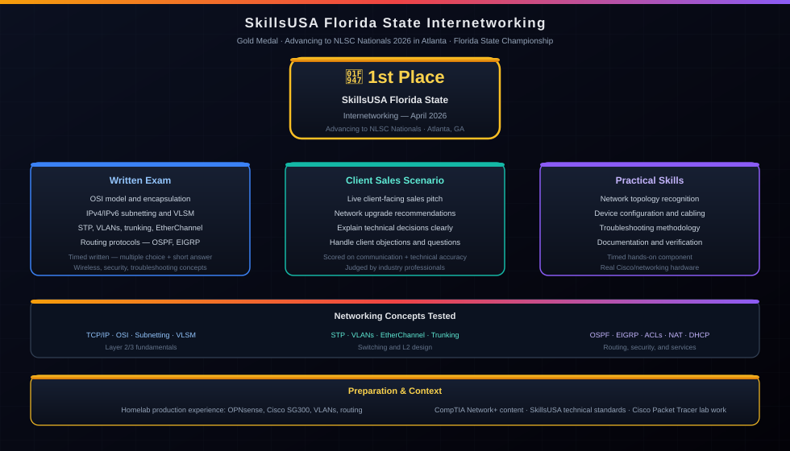

🥇 Florida State Champion — April 2026
SkillsUSA Internetworking
Gold Medal
Placed 1st in SkillsUSA Florida Internetworking and advanced to SkillsUSA NLSC Nationals in Atlanta. This writeup covers the competition format, how I prepared, and what the event tested.

STAR Breakdown
- Situation: Competing in the SkillsUSA Florida State Internetworking category after qualifying through SouthTech Academy, with no regional warm-up round.
- Task: Demonstrate mastery of L2/L3 networking concepts and the ability to explain complex technical solutions to a non-technical audience in a timed sales scenario.
- Action: Spent 4+ weeks independently studying CCNA-level routing and switching theory, practicing client-facing communication, and over-preparing with a full field kit to be ready for any possible scenario.
- Result: Placed 1st at the state competition and advanced to the SkillsUSA National Leadership & Skills Conference (NLSC) in Atlanta.
The Setup
SkillsUSA Internetworking is a state-level competition that tests both technical networking knowledge and the ability to communicate solutions to a non-technical audience. My category had a statewide field at the Florida State Competition, and only first place advanced to nationals.
At my school, there was no regional qualifier round for Internetworking. I went directly to the Florida State Competition after qualifying through SouthTech Academy. That meant there was no warm-up round, no test run at regionals — just showing up at state and performing.
How the Competition Works
Part 1 — Written Exam
The written exam covers Layer 2 and Layer 3 networking fundamentals: how switches forward frames using MAC address tables, how routers forward packets using routing tables, IP addressing and subnetting, VLAN concepts, and network device roles. The depth is roughly CCNA-level for the core topics — not surface-level. You have to actually understand why a switch floods an unknown unicast frame versus why it doesn't need to for a known destination.
Part 2 — Oral / Sales Scenario
The oral component is a sales scenario — you're presented with a client situation, similar to an MSP consultation, and required to recommend the right networking equipment and explain your reasoning clearly to a non-technical audience. The goal is not only choosing the right answer, but communicating it in a way someone without a networking background can follow and trust.
There was no hands-on lab at state for this category. The exam and scenario tested conceptual depth and communication — which meant the preparation had to cover both the technical knowledge and how to present it under pressure.
How I Prepared
I studied through CCNA-level material for the written exam — packet structure, MAC vs. IP forwarding, switching behavior, inter-VLAN routing, and subnetting. Not just reading. I used my SG300 switch at home to actually configure and test the concepts rather than just memorizing definitions.
For the oral scenario, I practiced explaining technical decisions to a non-technical audience. The skills required for an MSP client consult — listen to the client, map the need to the right solution, explain tradeoffs in plain language — are different from just knowing the answer. I spent time on that specifically because it's the part you can't fake.
I also prepared for more than the published requirements. I showed up with a full field kit: two laptops, crimpers, RJ45 strippers, console cables, DB9 adapters, a power strip, spare patch cables. I did not need the kit because there was no hands-on lab at state, but the preparation still helped. It forced me to review the concepts from both a theory and troubleshooting angle.
What It Actually Felt Like
I didn't expect to hear my name at the awards ceremony. There were four competitors in Internetworking and they were all serious students who had also prepared. Winning first felt different from passing a certification. A certification tests you against the material; competition also tests preparation, composure, and communication.
The oral scenario was the most pressure. You're standing there explaining a network solution to a judge playing a non-technical client, and the explanation has to be clear enough for them to trust the recommendation. That maps directly to help desk, MSP, and field support work.
What's Next — NLSC Nationals
Competing at the SkillsUSA National Leadership & Skills Conference at the Georgia World Congress Center in Atlanta, GA — June 1–5, 2026. More than 6,500 state champions compete in 114 skilled and leadership competitions from across the country. First place at states is the only path to nationals, which makes Atlanta the next and biggest checkpoint.
I'm preparing the same way I prepared for state: studying the material, practicing communication, and reviewing the equipment and scenarios that could come up.
Employer-Relevant Skills
SkillsUSA Internetworking tested technical knowledge and client communication — two things used every day in networking and IT support roles. The oral scenario mirrors MSP and help desk work: understand a client's environment, identify what they need, and explain the recommendation clearly.
Related Pages
Gigabit Switching & DMZ VLAN
Cisco SG300 core + Netgear GS728TP PoE access, trunk port design, and VLAN 50 DMZ isolation — the real hardware behind the concepts tested at competition.
View project ->OPNsense Edge Firewall
Bare-metal OPNsense with VLAN segmentation, Suricata IDS, and AdGuard DNS — L3 routing and firewall policy in daily production use.
View project ->CyberLaunch USF 2026
Florida's largest high school CTF — the offensive security competition that happened the same month.
Read writeup ->Certifications
The foundational cert stack that supported prep for written and scenario-based events.
View certs ->